En este ejercicio hay que acabar entregando una carpeta con el nombre del alumno y que contenga:
las capturas de pantalla (que se llamen nombre_alumno_q2a_XXY.png donde X sea el número de ejercicio e Y el número de captura del ejercicio).
el fichero alias.txt del ejercicio 11.
la copia de seguridad de los datos de la aplicación.
la carpeta de la aplicación (comprimida en un zip).
Si un usuario abre y ciera sesión en Question2Answer muchas veces en poco tiempo, la aplicación puede bloquear al usuario. Se recomienda por tanto utilizar varios navegadores, cada uno con un usuario, para reducir el número de cierres y aperturas de sesión.
1. Instalar Question2Answer
Question2Answer es una aplicación para crear sitios web de preguntas y respuestas.
Configure Question2Answer para que se muestre en español (haga una captura de toda la pantalla):
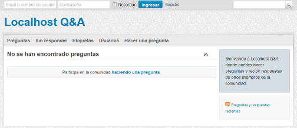
3. Nombre y logo del sitio: WebApps Q&A
Añada el nombre del sitio (WebApps Q&A) y el logotipo y corrija el texto de presentación (haga una captura de toda la pantalla):
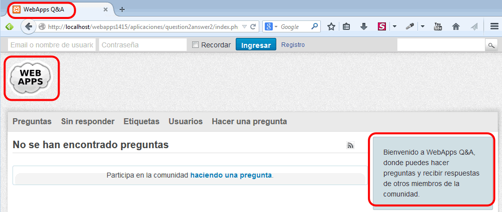
4. Crear dos usuarios más
Cambie la imagen del usuario admin a (haga una captura de toda la pantalla):
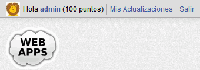
Asigne una imagen predeterminada a los nuevos usuarios: (haga una captura de toda la pantalla en la que se configura esta imagen):
Cree dos usuarios que se llamen Numa Nigerio (con nombre de usuario numa y contraseña numa) y Numerius Negidius (con nombre de usuario numerius y contraseña numerius). Haga una captura de toda la pantalla:
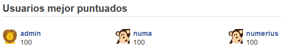
Cambie la imagen del usuario numa a (haga una captura de toda la pantalla):
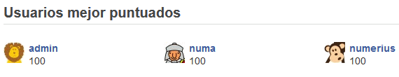
5. Hacer preguntas y respuestas
Haga que el usuario numa plantee tres preguntas, de manera que:
una la contesten numa y numerius
otra la conteste numerius
otra se quede sin contestar
Haga una captura de toda la pantalla:
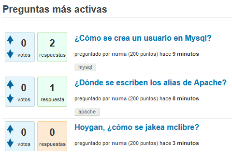
6. Muro de usuario
Como usuario admin escriba una frase en su muro y como usuario numa vea el muro de admin (haga una captura de toda la pantalla):
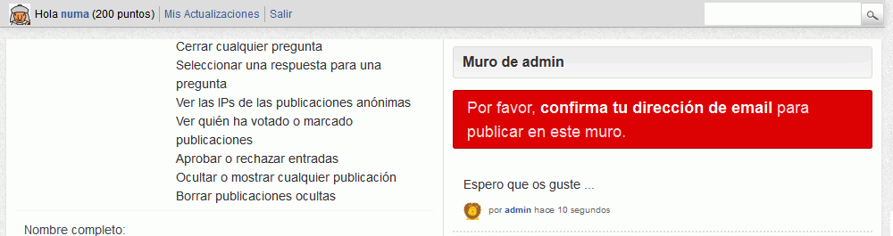
Configure el sitio de manera que no se necesite confirmar la dirección de email para publicar en el muro. Como usuario numa escriba en el muro de admin.
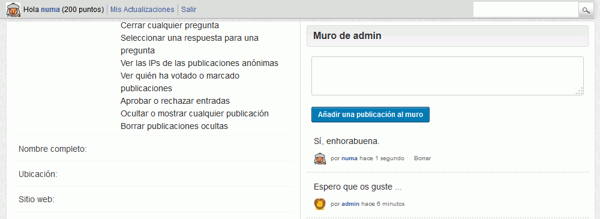
7. Bloquear el registro de nuevos usuarios
Configure el sitio de manera que no se puedan registrar más usuarios (haga una captura de toda la pantalla):
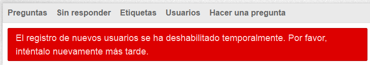
8. Cambiar una pregunta
Cómo usuario admin modifique una pregunta (haga una captura de toda la pantalla en la que modifica la pregunta) :
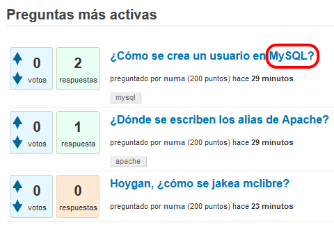
9. Filtrar palabras
Impida que los usuarios incluyan ciertos términos en sus preguntas o respuestas (haga una captura de toda la pantalla en la que haya incluido varias palabrotas a ocultar):
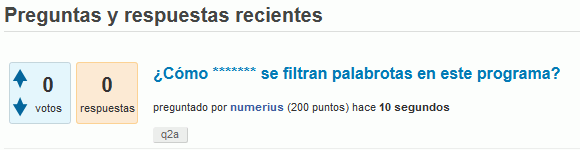
10. Crear un tema
Cree un nuevo tema que se llame WebApps (copiado del tema Snow) y que se pueda elegir en el menú de temas (haga una captura de toda la pantalla):
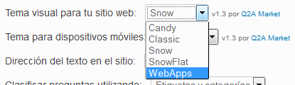
Convierta en verde en el tema WebApps el color de únicamente los dos elementos siguientes (haga una captura de toda la pantalla):
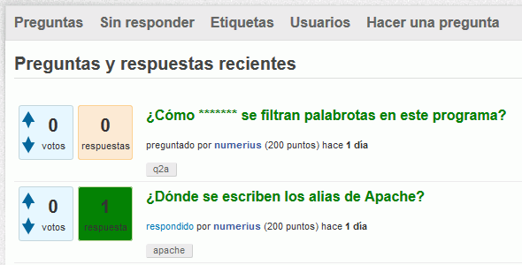
11. Opciones de menú
Añada una opción al menú que enlace con una web externa (haga una captura de toda la pantalla):
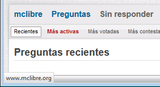
12. Alias
Cree un alias para poder acceder a Question2Answer mediante la dirección http://localhost/q2a.
Escriba un fichero alias.txt con el alias que ha creado.
13. Copia de seguridad
Entre en phpMyAdmin como usuario iaw_q2a_1, elija la base de datos iaw_q2a_1 y exporte las tablas con el método rápido al fichero iaw_q2a_1.sql.
 (haga una captura de toda la pantalla):
(haga una captura de toda la pantalla):
 (haga una captura de toda la pantalla en la que se configura esta imagen):
(haga una captura de toda la pantalla en la que se configura esta imagen): (haga una captura de toda la pantalla):
(haga una captura de toda la pantalla):